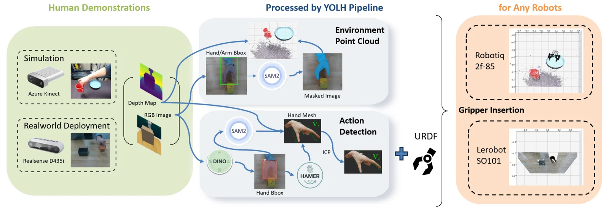
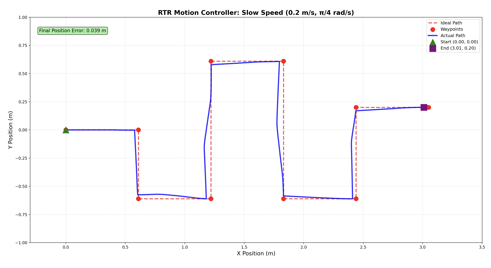

News
Research & Experience
now
Extending the CondPose surgical hand-pose system with split conformal prediction per joint and uncertainty-gated temporal conditioning. Exploring kinematic embedding priors and language priors via surgical VLMs, targeting SafeSurg / MICCAI workshop venues.
now
Co-leading a 5-member task team building a multi-camera AprilTag motion-capture system for Cookiebot swarm experiments; validated RealSense tracking pipeline with MAE benchmarks. Also developing YOLH — a diffusion policy trained from human RGB-D demonstrations.
Characterized subliminal learning — the unintended transmission of misalignment or preference through semantically unrelated fine-tuning data — finding that trait acquisition spikes sharply in the first 10–20 training steps. Proposed liminal training, an annealed KL regularizer that provably prevents the acquisition of unwanted traits.
Built real-time sensor dashboards for water-quality monitoring (Dr. Branko Kerkez) and ML-based construction-site safety analytics (Dr. SangHyun Lee).
Selected Projects
Uncertainty-Gated CondPose
Surgical hand-pose tracking augmented with split conformal prediction and temporal conditioning for calibrated, joint-level uncertainty estimates.
View project →
YOLH — You Only Learn from Humans
Manipulation policy from human RGB-D demonstrations via a RISE-based diffusion policy. No teleoperation — just watching people work.
View project →CGR — Conversational Memory
Intent-aware graph retrieval for long-term conversational memory, benchmarked against the MAGMA baseline on the LoCoMo benchmark.
View project →Go2W Motion Capture
ROS2 + RealSense + AprilTag tracking stack feeding a Go2W quadruped for locomotion and multi-robot swarm experiments.
View project →
MBot Autonomous Navigation
RTR motion controller, particle-filter SLAM, and occupancy-grid mapping built from scratch in C++ with ROS2 for a differential-drive robot.
View project →
HydroSense
Bottle-agnostic water-level tracker using a bone-conduction mic, MFCC features, and an SVM on an STM32 — no camera or ultrasonic sensor needed.
View project →Tools & Methods
Languages & Infrastructure
Python, C++, LaTeX, Git, Linux, CUDA, ROS2
ML / Deep Learning
PyTorch, transformers, diffusion models, conformal prediction, VLMs (CLIP, LLaVA, Qwen), DPO / GRPO / RLHF
Robotics & Perception
ROS2, Intel RealSense, AprilTag, diffusion policies, RGB-D demonstration learning, motion capture
3D Vision & Graphics
NeRF, Gaussian splatting, ray tracing, generative models, surgical video understanding
Contact
Always glad to hear from researchers, collaborators, and curious people — especially around surgical AI, multimodal perception, and robot learning.